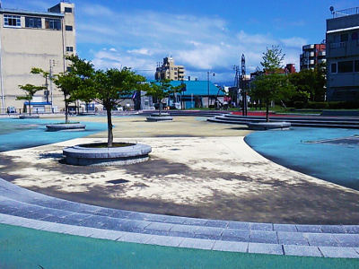
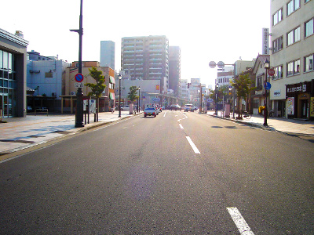

スポット名をクリックすると、各スポット詳細ページへ飛びます。
「当コースで行くスポット」のAから順に歩いて行きましょう！
海辺のスポットと、太宰治ゆかりの場所がコンパクトに詰まったコースです。おいしいコーヒーや スイーツなどが楽しめる喫茶店がゴールです。 青森にいらっしゃって、ちょっと時間がある方などにお勧めのコースです。
所要時間・約1時間（飲食の時間は含みません）/距離・約1.5km
海辺のスポットと、太宰治ゆかりの場所がコンパクトに詰まったコースです。おいしいコーヒーや スイーツなどが楽しめる喫茶店がゴールです。 青森にいらっしゃって、ちょっと時間がある方などにお勧めのコースです。
所要時間・約1時間（飲食の時間は含みません）/距離・約1.5km


- 
- 